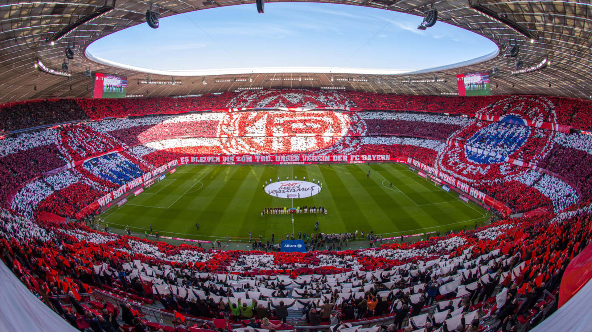

Allianz Arena
Estadium local del FC Bayern München
2020
Champions conseguida en pandemia ante el PSG

2013
Champions conseguida ante nuestro clasico rival el Borussia Dormund
Estadium local del FC Bayern München
Champions conseguida en pandemia ante el PSG
Champions conseguida ante nuestro clasico rival el Borussia Dormund